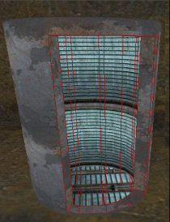
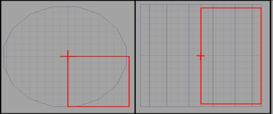

How To Make Elevators With Doors That Follow The Lift
This is a work around for ?UT,?UT2003,UT2004,
By VitalOverdose
The bHardAttach issue
Anyone who's made a few maps must have tried to make an elevator...
for those of you that haven't.. the doors are a bit of a problem.You can make the doors follow the elevator AND move apart to open. Once you have set the 'bhardattach' in the default properties for the doors (to make them follow the lift) the X, Y and Z of the door becomes locked to that of the lift cab. In other words you cant make them move in any direction.
Solution
- Its only the vector position of the pivot that cannot be altered..not its rotaion.
The trick to this is to make your elevator from a cylinder and not the traditional 'box' shape. Think of a revolving door, its X,Y,Z position never actually moves yet the mesh is moving. It works on the same principal as this method.
Now go to the static mesh browser select 'mylevel' and with any luck you should now have your door mesh. If you have troubles getting the pivot in the right place you may want to consider using a separate subtracted box (building room) elsewhere to create the mesh. Add the door mesh back to the level and position the builder brush over it then right click on the brush and pick 'use brush as collision'. You can check if the collision has been set in the static mesh browser.  Use the remaining cylinder to create the lift cab. Put the doors (movers)into a 'closed position' on the elevator before setting the pivot in the center of the elevator. Now add the doors as movers and hard attach them to the elevator. With the door pivot in the center of the round lift give the movers 2 keyframes for the open/closed action but ONLY use rotate to set the keyframes.
And there you have it.....working elevator doors that follow the lift. |

![[FOD_Elevatordoor]](images/fod-elevatordoor.jpeg) make the elevator ROUND,make the doors CURVED. |
-FatalOverdose
Discussion
Ragdoll: I have pivoting-outward (not sliding) doors attached to a cube-ish mover and they close and follow fine, but when the lift reaches its destination and triggers the door to open the doors fly back to the starting station. I know why this is happening-the key0 position that i set is back at the station and the door remembers that and goes back there rather than remain attached to the lift and open out at the 2nd station-but how can I fix this? Thanks in advance.
VitalOverdose Its probably down the the pivot moving as well as rotating. If you can design the doors so they can open without the pivot moving having to move at all (just rotate) then it should all work fine. Its like a door hinge, the center of a door hinge never actually changes location on a x,y,z, plane it just changes direction.